狙い
力学機能は、マテリアルの微小なスケールでの弾性挙動や強弾性、強磁性、強誘電などのマルチフェロイックを指す分野です。このスケールでの理解は、材料のマクロスケールでの性質に影響を与え、新しい種類の弾性体やコンポジット材料の設計に役立ちます。微視弾性は、素材の微小構造（例：結晶粒、繊維、空孔など）とその弾性性質との相互作用に焦点を当てます。この分野では、有限要素法（FEM）、分子動力学シミュレーション、実験的手法などが用いられることが多いです。
論文タイトル一覧
スピン格子ダイナミクスのための磁気弾性原子間ポテンシャルの構築
この研究では、磁気弾性マシンラーニング原子間ポテンシャル（ML-IAPs）を生成するためのデータ駆動型のフレームワークを提案しています。磁気弾性ML-IAPsは、集団的な原子スピンモデルとML-IAPを結合して、磁気と弾性の両方の自由度を一貫して表現するポテンシャルエネルギー面（PES）を構築します。原子スピンモデルとML-IAPは、第一原理計算のデータに基づいてパラメータ化されます。α-鉄に対して磁気弾性ML-IAPを生成し、第一原理計算や実験との定量的な一致を示しました。また、LAMMPSパッケージを用いて、磁気弾性ML-IAPを直接利用して、磁気と弾性の相互作用を考慮した大規模なスピン格子ダイナミクスシミュレーションを実行することができることを示しました。
2021-09-28
Data-driven magneto-elastic predictions with scalable classical spin-lattice dynamics
Svetoslav Nikolov, et al. ( Sandia National Laboratories, MS 1322, Albuquerque, NM 87185, USA)
npj Computational Materials (2021) 7:153
Data-driven magneto-elastic predictions with scalable classical spin-lattice dynamics
Svetoslav Nikolov, et al. ( Sandia National Laboratories, MS 1322, Albuquerque, NM 87185, USA)
npj Computational Materials (2021) 7:153
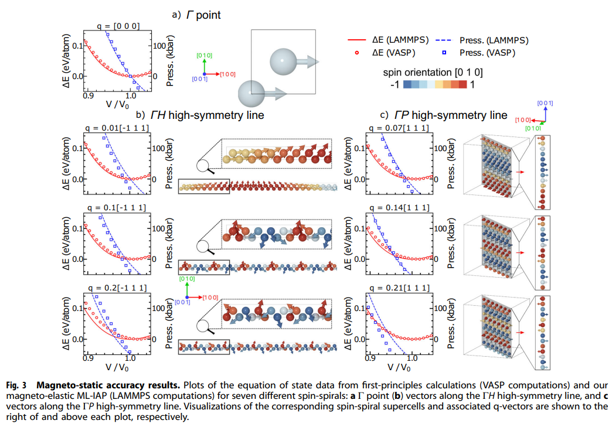
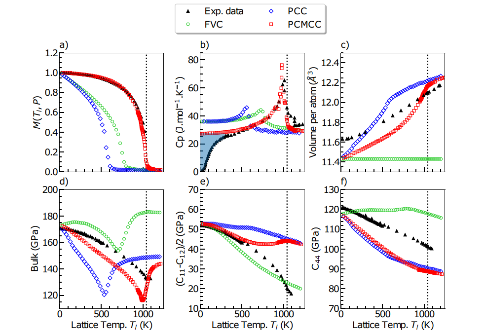
【コメント】
Nieves一族の磁気弾性に関する最新論文
【用語】 スピン格子ダイナミクス：原子の位置とスピンの両方の時間発展を同時に追跡する分子動力学の一種です。磁気材料の熱力学的性質や磁気相転移を研究するために用いられます。マシンラーニング原子間ポテンシャル：原子間の相互作用を機械学習の手法を用いて近似する原子間ポテンシャルの一種です。第一原理計算のデータを学習することで、高い精度と効率性を両立することができます。原子スピンモデル：原子のスピンを古典的な磁気モーメントとして扱うモデルです。スピン間の相互作用は、ハイゼンベルグハミルトニアンやその拡張形で表されます。ポテンシャルエネルギー面：原子の位置とスピンの関数として定義されるエネルギーの多次元曲面です。原子の力や応力は、この曲面の勾配や曲率によって求められます。
【提案手法】 第一原理計算のデータセットを作成する。データセットには、様々な磁気構造や弾性変形を持つ原子配置のエネルギーと力が含まれる。原子スピンモデルのパラメータを最適化する。スピンスパイラル計算の結果を用いて、スピン間の相互作用の強さと距離依存性を決定する。ML-IAPのパラメータを最適化する。原子スピンモデルのエネルギーと力の寄与をデータセットから差し引いた後、残りの非磁性成分を再現するようにML-IAPを学習する。ML-IAPには、スペクトル近傍解析ポテンシャル（SNAP）を用いる。原子スピンモデルとML-IAPを組み合わせて、一貫した磁気弾性PESを構築する。このPESを用いて、LAMMPSでスピン格子ダイナミクスシミュレーションを実行することができる。
【学術的新規性】 磁気弾性ML-IAPを生成するためのデータ駆動型のフレームワークを提案したこと。これにより、任意の磁気材料に対して、磁気と弾性の両方の自由度を一貫して表現するPESを構築することができる。磁気と弾性の相互作用を考慮した大規模なスピン格子ダイナミクスシミュレーションを可能にしたこと。これにより、磁気相転移や磁気弾性効果などの現象を定量的に予測することができる。α-鉄に対して磁気弾性ML-IAPを生成し、第一原理計算や実験との高い一致を示したこと。これにより、磁気弾性ML-IAPの有用性と信頼性を検証した。
【その他】 スピン格子ダイナミクスシミュレーションとは、原子の位置とスピンの両方の時間発展を同時に追跡する分子動力学の一種です。磁気材料の熱力学的性質や磁気相転移を研究するために用いられます。スピン格子ダイナミクスシミュレーションでは、原子間の相互作用をポテンシャルエネルギー面として表現し、原子の力や応力をその勾配や曲率によって求めます。また、スピン間の相互作用は、ハイゼンベルグハミルトニアンやその拡張形で表されます。スピン格子ダイナミクスシミュレーションにより、磁気と弾性の相互作用や、非平衡フォノン環境下でのスピンダイナミクスなどの現象を定量的に予測することができます。ポテンシャルエネルギー面とは、原子の位置やスピンなどのパラメータに対して、系のエネルギーを表した多次元の曲面のことです。この曲面を用いると、分子の構造や化学反応のダイナミクスを分析することができます。例えば、曲面上のエネルギーの最小値は安定な化学種に対応し、エネルギーの最大値は遷移状態に対応します。また、曲面の勾配や曲率は原子の力や応力を求めるのに必要です。ポテンシャルエネルギー面の概念は1913年にルネ・マルスランによって提案され、1931年にヘンリー・アイリングとマイケル・ポランニーがH + H2反応に対して初めて計算しました。
【用語】 スピン格子ダイナミクス：原子の位置とスピンの両方の時間発展を同時に追跡する分子動力学の一種です。磁気材料の熱力学的性質や磁気相転移を研究するために用いられます。マシンラーニング原子間ポテンシャル：原子間の相互作用を機械学習の手法を用いて近似する原子間ポテンシャルの一種です。第一原理計算のデータを学習することで、高い精度と効率性を両立することができます。原子スピンモデル：原子のスピンを古典的な磁気モーメントとして扱うモデルです。スピン間の相互作用は、ハイゼンベルグハミルトニアンやその拡張形で表されます。ポテンシャルエネルギー面：原子の位置とスピンの関数として定義されるエネルギーの多次元曲面です。原子の力や応力は、この曲面の勾配や曲率によって求められます。
【提案手法】 第一原理計算のデータセットを作成する。データセットには、様々な磁気構造や弾性変形を持つ原子配置のエネルギーと力が含まれる。原子スピンモデルのパラメータを最適化する。スピンスパイラル計算の結果を用いて、スピン間の相互作用の強さと距離依存性を決定する。ML-IAPのパラメータを最適化する。原子スピンモデルのエネルギーと力の寄与をデータセットから差し引いた後、残りの非磁性成分を再現するようにML-IAPを学習する。ML-IAPには、スペクトル近傍解析ポテンシャル（SNAP）を用いる。原子スピンモデルとML-IAPを組み合わせて、一貫した磁気弾性PESを構築する。このPESを用いて、LAMMPSでスピン格子ダイナミクスシミュレーションを実行することができる。
【学術的新規性】 磁気弾性ML-IAPを生成するためのデータ駆動型のフレームワークを提案したこと。これにより、任意の磁気材料に対して、磁気と弾性の両方の自由度を一貫して表現するPESを構築することができる。磁気と弾性の相互作用を考慮した大規模なスピン格子ダイナミクスシミュレーションを可能にしたこと。これにより、磁気相転移や磁気弾性効果などの現象を定量的に予測することができる。α-鉄に対して磁気弾性ML-IAPを生成し、第一原理計算や実験との高い一致を示したこと。これにより、磁気弾性ML-IAPの有用性と信頼性を検証した。
【その他】 スピン格子ダイナミクスシミュレーションとは、原子の位置とスピンの両方の時間発展を同時に追跡する分子動力学の一種です。磁気材料の熱力学的性質や磁気相転移を研究するために用いられます。スピン格子ダイナミクスシミュレーションでは、原子間の相互作用をポテンシャルエネルギー面として表現し、原子の力や応力をその勾配や曲率によって求めます。また、スピン間の相互作用は、ハイゼンベルグハミルトニアンやその拡張形で表されます。スピン格子ダイナミクスシミュレーションにより、磁気と弾性の相互作用や、非平衡フォノン環境下でのスピンダイナミクスなどの現象を定量的に予測することができます。ポテンシャルエネルギー面とは、原子の位置やスピンなどのパラメータに対して、系のエネルギーを表した多次元の曲面のことです。この曲面を用いると、分子の構造や化学反応のダイナミクスを分析することができます。例えば、曲面上のエネルギーの最小値は安定な化学種に対応し、エネルギーの最大値は遷移状態に対応します。また、曲面の勾配や曲率は原子の力や応力を求めるのに必要です。ポテンシャルエネルギー面の概念は1913年にルネ・マルスランによって提案され、1931年にヘンリー・アイリングとマイケル・ポランニーがH + H2反応に対して初めて計算しました。
立方晶に対するスピン格子モデル
この研究では、立方晶のスピン格子モデルを構築するための一般的な手法を提案しています。スピン格子モデルは、原子のスピンと格子の運動を結びつけるモデルで、磁気弾性や磁気カロリーなどの現象をシミュレーションするのに有用です。この研究では、ネールモデルと呼ばれるスピン格子モデルのパラメータを、ベーテ-スレーター曲線という関数を用いて、磁気結晶異方性や磁気弾性係数などの物理量に基づいて決定する方法を示しています。また、磁気モーメントの体積依存性をランダウエネルギーを用いてパラメータ化する方法も探っています。この手法を用いて、BCC鉄とFCCニッケルのスピン格子モデルを開発し、実験値とよく一致する弾性定数や磁気特性を再現できることを示しています。
2021-03-24
Spin-lattice model for cubic crystals
P. Nieves, et al. (Technical University of Ostrava, 17. listopadu 2172/15, Czech Republic)
PHYSICAL REVIEW B 103, 094437 (2021)
Spin-lattice model for cubic crystals
P. Nieves, et al. (Technical University of Ostrava, 17. listopadu 2172/15, Czech Republic)
PHYSICAL REVIEW B 103, 094437 (2021)
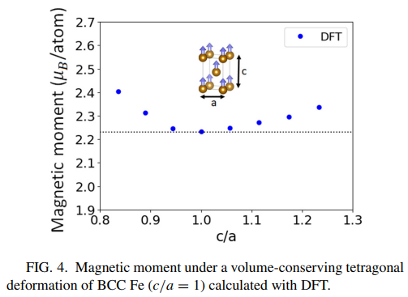
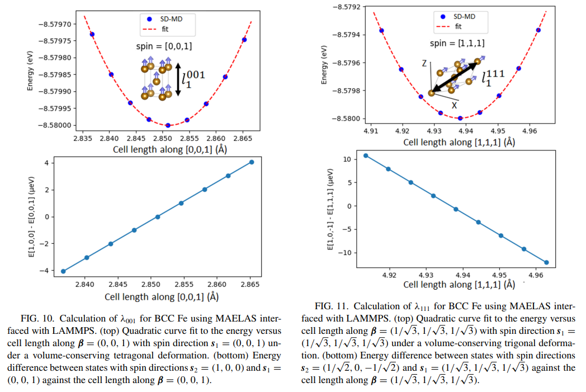
【コメント】
Nieves一族の磁気弾性に関する最新論文
【用語】 スピン格子モデル：原子のスピンと格子の運動を結びつけるモデルで、磁気エネルギーと弾性エネルギーの相互作用を考慮することができる。スピン格子モデルは、磁気弾性や磁気カロリーなどの現象をシミュレーションするのに有用である。スピン格子モデルには、ネールモデルやスピン-格子ダイナミクスなどのさまざまな種類がある。ネールモデル：スピン格子モデルの一種で、原子のスピンに二重極子と四重極子の相互作用を導入することで、磁気結晶異方性や磁気弾性を再現することができる。ネールモデルは、磁気異方性や磁気弾性の対称性を正しく表現することができるが、非磁性原子や現象的な性質を持つという欠点もある。ベーテ-スレーター曲線：原子間の交換相互作用の距離依存性を表す関数で、距離が短いと反強磁性的に、距離が長いと強磁性的になるという特徴を持つ。ベーテ-スレーター曲線は、スピン格子モデルのパラメータを決定するのに便利である。ベーテ-スレーター曲線は、交換積分やスピン波剛性係数などの物理量に基づいて決定することができる。ランダウエネルギー：磁気モーメントの大きさの温度や体積依存性を表すエネルギーで、臨界点の近傍でのランダウ展開によって得られる。ランダウエネルギーは、磁気モーメントの大きさに対して偶数次の項しか持たないことが特徴である。ランダウエネルギーを用いることで、磁気モーメントの体積依存性をパラメータ化することができる。
【提案手法】 この研究で提案する手法は、立方晶のスピン格子モデルのパラメータを、ベーテ-スレーター曲線という関数を用いて、磁気結晶異方性や磁気弾性係数などの物理量に基づいて決定する方法である。具体的には、以下の手順でパラメータを計算する。まず、原子間ポテンシャルとしてMEAMポテンシャルを用いて、平衡体積と弾性定数を求める。次に、DFT計算によって、磁気モーメントの体積依存性を求める。このデータにランダウエネルギーをフィッティングすることで、磁気モーメントのパラメータを決定する。さらに、ネールモデルのパラメータを求める。ベーテ-スレーター曲線とその微分に、磁気結晶異方性や磁気弾性係数などの物理量を代入することで、二重極子と四重極子のパラメータを決定する。交換相互作用のパラメータは、キュリー温度や体積磁気歪などの物理量を代入することで決定する。最後に、得られたパラメータを用いて、スピン格子モデルのシミュレーションを行う。弾性定数や磁気特性などの物理量を計算し、実験値と比較する。
【学術的新規性】 スピン格子モデルのパラメータを、ベーテ-スレーター曲線という関数を用いて、磁気結晶異方性や磁気弾性係数などの物理量に基づいて決定するという一般的な手法を提案したこと。これにより、スピン格子モデルの構築が容易になり、さまざまな立方晶の磁気弾性や磁気カロリーなどの現象をシミュレーションすることができるようになったこと。磁気モーメントの体積依存性をランダウエネルギーを用いてパラメータ化する方法を探ったこと。これにより、磁化の圧力依存性を考慮することができるようになったこと。BCC鉄とFCCニッケルのスピン格子モデルを開発し、実験値とよく一致する弾性定数や磁気特性を再現できたこと。これにより、提案手法の有効性と精度を実証したこと。
【その他】 スピン格子モデルとは、格子点に配置されたスピンと呼ばれる磁気的な自由度を持つ粒子の相互作用を記述するモデルです。スピン格子モデルには、以下のような種類があります。イジング模型：スピンは上向き(+1)か下向き(-1)の二つの状態しか取れないと仮定したモデルです。最隣接するスピン同士の相互作用のみを考えます。強磁性体や二元合金、格子気体などの模型として用いられます。一次元では相転移を起こしませんが、二次元では厳密解が得られ、相転移が起きます。三次元では厳密解は知られていませんが、数値計算や近似解によって相転移が起きることが示されています。ハイゼンベルク模型：スピンは任意の方向を向くことができると仮定したモデルです。最隣接するスピン同士の相互作用のみを考えます。磁性体や超伝導体などの模型として用いられます。一次元では相転移を起こしませんが、二次元や三次元では相転移が起きます。XY模型：スピンはxy平面内で任意の方向を向くことができると仮定したモデルです。最隣接するスピン同士の相互作用のみを考えます。超流動や超伝導などの模型として用いられます。一次元では相転移を起こしませんが、二次元では相転移が起きます。三次元では厳密解は知られていませんが、数値計算や近似解によって相転移が起きることが示されています。以上のように、スピン格子モデルはスピンの自由度や相互作用の仮定によって様々な種類があります。スピン格子モデルは、物質の磁性や相転移などの現象を理解するための重要なツールです。
【用語】 スピン格子モデル：原子のスピンと格子の運動を結びつけるモデルで、磁気エネルギーと弾性エネルギーの相互作用を考慮することができる。スピン格子モデルは、磁気弾性や磁気カロリーなどの現象をシミュレーションするのに有用である。スピン格子モデルには、ネールモデルやスピン-格子ダイナミクスなどのさまざまな種類がある。ネールモデル：スピン格子モデルの一種で、原子のスピンに二重極子と四重極子の相互作用を導入することで、磁気結晶異方性や磁気弾性を再現することができる。ネールモデルは、磁気異方性や磁気弾性の対称性を正しく表現することができるが、非磁性原子や現象的な性質を持つという欠点もある。ベーテ-スレーター曲線：原子間の交換相互作用の距離依存性を表す関数で、距離が短いと反強磁性的に、距離が長いと強磁性的になるという特徴を持つ。ベーテ-スレーター曲線は、スピン格子モデルのパラメータを決定するのに便利である。ベーテ-スレーター曲線は、交換積分やスピン波剛性係数などの物理量に基づいて決定することができる。ランダウエネルギー：磁気モーメントの大きさの温度や体積依存性を表すエネルギーで、臨界点の近傍でのランダウ展開によって得られる。ランダウエネルギーは、磁気モーメントの大きさに対して偶数次の項しか持たないことが特徴である。ランダウエネルギーを用いることで、磁気モーメントの体積依存性をパラメータ化することができる。
【提案手法】 この研究で提案する手法は、立方晶のスピン格子モデルのパラメータを、ベーテ-スレーター曲線という関数を用いて、磁気結晶異方性や磁気弾性係数などの物理量に基づいて決定する方法である。具体的には、以下の手順でパラメータを計算する。まず、原子間ポテンシャルとしてMEAMポテンシャルを用いて、平衡体積と弾性定数を求める。次に、DFT計算によって、磁気モーメントの体積依存性を求める。このデータにランダウエネルギーをフィッティングすることで、磁気モーメントのパラメータを決定する。さらに、ネールモデルのパラメータを求める。ベーテ-スレーター曲線とその微分に、磁気結晶異方性や磁気弾性係数などの物理量を代入することで、二重極子と四重極子のパラメータを決定する。交換相互作用のパラメータは、キュリー温度や体積磁気歪などの物理量を代入することで決定する。最後に、得られたパラメータを用いて、スピン格子モデルのシミュレーションを行う。弾性定数や磁気特性などの物理量を計算し、実験値と比較する。
【学術的新規性】 スピン格子モデルのパラメータを、ベーテ-スレーター曲線という関数を用いて、磁気結晶異方性や磁気弾性係数などの物理量に基づいて決定するという一般的な手法を提案したこと。これにより、スピン格子モデルの構築が容易になり、さまざまな立方晶の磁気弾性や磁気カロリーなどの現象をシミュレーションすることができるようになったこと。磁気モーメントの体積依存性をランダウエネルギーを用いてパラメータ化する方法を探ったこと。これにより、磁化の圧力依存性を考慮することができるようになったこと。BCC鉄とFCCニッケルのスピン格子モデルを開発し、実験値とよく一致する弾性定数や磁気特性を再現できたこと。これにより、提案手法の有効性と精度を実証したこと。
【その他】 スピン格子モデルとは、格子点に配置されたスピンと呼ばれる磁気的な自由度を持つ粒子の相互作用を記述するモデルです。スピン格子モデルには、以下のような種類があります。イジング模型：スピンは上向き(+1)か下向き(-1)の二つの状態しか取れないと仮定したモデルです。最隣接するスピン同士の相互作用のみを考えます。強磁性体や二元合金、格子気体などの模型として用いられます。一次元では相転移を起こしませんが、二次元では厳密解が得られ、相転移が起きます。三次元では厳密解は知られていませんが、数値計算や近似解によって相転移が起きることが示されています。ハイゼンベルク模型：スピンは任意の方向を向くことができると仮定したモデルです。最隣接するスピン同士の相互作用のみを考えます。磁性体や超伝導体などの模型として用いられます。一次元では相転移を起こしませんが、二次元や三次元では相転移が起きます。XY模型：スピンはxy平面内で任意の方向を向くことができると仮定したモデルです。最隣接するスピン同士の相互作用のみを考えます。超流動や超伝導などの模型として用いられます。一次元では相転移を起こしませんが、二次元では相転移が起きます。三次元では厳密解は知られていませんが、数値計算や近似解によって相転移が起きることが示されています。以上のように、スピン格子モデルはスピンの自由度や相互作用の仮定によって様々な種類があります。スピン格子モデルは、物質の磁性や相転移などの現象を理解するための重要なツールです。
温度依存性の磁気異方性と磁気弾性性の古典的スピン格子計算
この研究では、磁気異方性と磁気弾性性の温度依存性を正確に計算することができる古典的スピン格子動力学（MSD）の方法論を提案している。非磁性相互作用は、第一原理および実験データに基づいてパラメータ化された機械学習の相互作用ポテンシャル（SNAP）によって表現される。磁気弾性相互作用は、交換相互作用とネール対相互作用モデルの組み合わせによって表現される。本研究では、α鉄を対象として、この枠組みを適用している。まず、0 Kのネール相互作用モデルのパラメータ化を行い、磁気異方性エネルギー面と歪みとの関係を調べた。次に、0 Kのネールパラメータ化を用いて、磁気弾性応答の温度依存性を評価した。その後、ネールパラメータの影響を調べるために、δ感度分析を行った。この結果をもとに、遺伝的アルゴリズムを用いて、0～1200 Kの範囲でB1とB2の磁気弾性係数の誤差を最小化するネールパラメータの最適化を行った。本研究の結果は、古典的スピン格子動力学と磁気弾性相互作用ポテンシャルを用いることで、B1とB2の磁気弾性係数と磁気異方性係数の温度依存性を比較的よく再現できることを示している。
2023-03-23
Temperature dependence of magnetic anisotropy and magnetoelasticity from classical spin-lattice calculations
S. Nikolov, et al. (Sandia National Laboratories, P.O. Box 5800, Albuquerque, New Mexico 87185, USA)
Phys. Rev. B 107, 094426 – Published 23 March 2023
Temperature dependence of magnetic anisotropy and magnetoelasticity from classical spin-lattice calculations
S. Nikolov, et al. (Sandia National Laboratories, P.O. Box 5800, Albuquerque, New Mexico 87185, USA)
Phys. Rev. B 107, 094426 – Published 23 March 2023
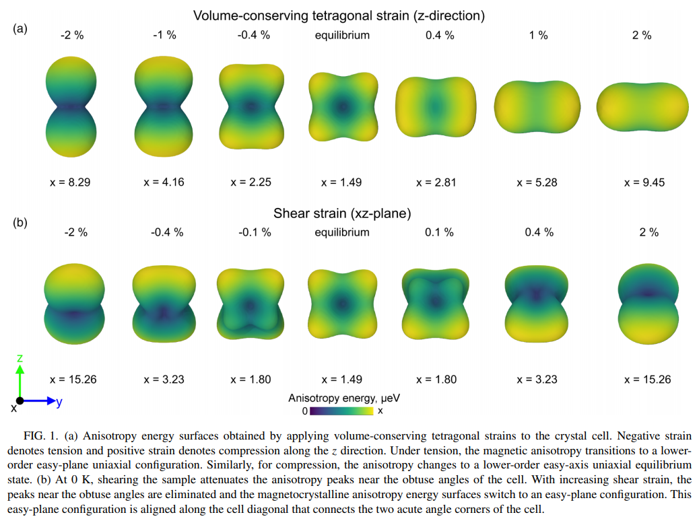
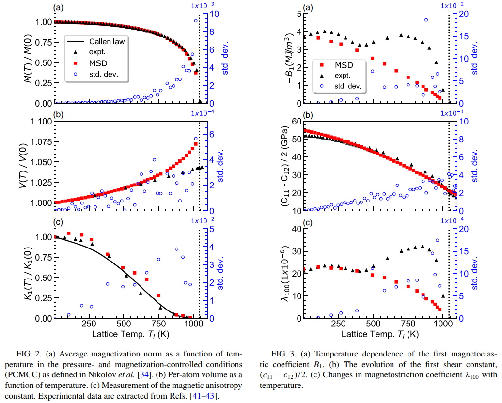
【コメント】
Nieves一族の磁気弾性に関する最新論文
【用語】 古典的スピン格子動力学（MSD）：原子の位置、運動量、磁気モーメントの動的な振る舞いを同時に計算する数値シミュレーションの手法である。原子間の力は相互作用ポテンシャルによって決まり、磁気モーメントの時間発展はランダウ・リフシッツ・ギルバート方程式に従う。MSDは、磁気異方性や磁気弾性性など、磁気的な性質と構造的な性質との相互作用を調べるのに有用である。磁気異方性：磁気モーメントの向きによって磁気エネルギーが異なる現象である。磁気異方性は、スピン軌道相互作用によって起こる。磁気異方性は、磁化の安定性や磁気記録の性能に影響する重要な因子である。磁気弾性性：磁気モーメントの向きと歪みとの相互作用である。磁気弾性性は、磁気モーメントの回転によって歪みが発生する磁歪効果や、歪みによって磁気モーメントの向きが変化する磁気歪変調効果を含む。磁気弾性性は、磁気センサーやアクチュエーターなどの応用において重要な役割を果たす。ネール対相互作用モデル：磁気弾性性を表現するための経験的なモデルである。ネール対相互作用モデルは、磁気モーメントの二次の組み合わせに比例する磁気エネルギー項を導入する。ネール対相互作用モデルは、磁気異方性や磁気弾性係数をパラメータとして与える必要がなく、第一原理計算や実験データから決定できるという利点がある。
【提案手法】 この研究で提案する手法は、MSDとSNAPポテンシャルを組み合わせたものである。SNAPポテンシャルは、第一原理計算から生成された構造データに基づいて機械学習によって作成された相互作用ポテンシャルである。SNAPポテンシャルは、非磁性相互作用を高精度に再現できる。磁気弾性相互作用は、交換相互作用とネール対相互作用モデルの組み合わせによって表現される。交換相互作用は、第一原理のスピン螺旋計算からパラメータ化される。ネール対相互作用モデルは、0 Kの磁気異方性や磁気弾性係数からパラメータ化される。この手法により、温度依存性の磁気異方性や磁気弾性係数を計算することができる。
【学術的新規性】 MSDとSNAPポテンシャルを組み合わせたことで、磁気異方性や磁気弾性性の温度依存性を高精度に計算できるようになった。これまでの古典的スピン格子法では、磁気異方性や磁気弾性係数の温度依存性を再現することができなかった。ネール対相互作用モデルを用いたことで、磁気異方性や磁気弾性係数をパラメータとして与える必要がなくなり、第一原理計算や実験データから決定できるようになった。これにより、磁気異方性や磁気弾性性の物理的な起源を明らかにできる。δ感度分析と遺伝的アルゴリズムを用いたことで、ネール対相互作用モデルのパラメータの影響を評価し、最適化することができた。
【用語】 古典的スピン格子動力学（MSD）：原子の位置、運動量、磁気モーメントの動的な振る舞いを同時に計算する数値シミュレーションの手法である。原子間の力は相互作用ポテンシャルによって決まり、磁気モーメントの時間発展はランダウ・リフシッツ・ギルバート方程式に従う。MSDは、磁気異方性や磁気弾性性など、磁気的な性質と構造的な性質との相互作用を調べるのに有用である。磁気異方性：磁気モーメントの向きによって磁気エネルギーが異なる現象である。磁気異方性は、スピン軌道相互作用によって起こる。磁気異方性は、磁化の安定性や磁気記録の性能に影響する重要な因子である。磁気弾性性：磁気モーメントの向きと歪みとの相互作用である。磁気弾性性は、磁気モーメントの回転によって歪みが発生する磁歪効果や、歪みによって磁気モーメントの向きが変化する磁気歪変調効果を含む。磁気弾性性は、磁気センサーやアクチュエーターなどの応用において重要な役割を果たす。ネール対相互作用モデル：磁気弾性性を表現するための経験的なモデルである。ネール対相互作用モデルは、磁気モーメントの二次の組み合わせに比例する磁気エネルギー項を導入する。ネール対相互作用モデルは、磁気異方性や磁気弾性係数をパラメータとして与える必要がなく、第一原理計算や実験データから決定できるという利点がある。
【提案手法】 この研究で提案する手法は、MSDとSNAPポテンシャルを組み合わせたものである。SNAPポテンシャルは、第一原理計算から生成された構造データに基づいて機械学習によって作成された相互作用ポテンシャルである。SNAPポテンシャルは、非磁性相互作用を高精度に再現できる。磁気弾性相互作用は、交換相互作用とネール対相互作用モデルの組み合わせによって表現される。交換相互作用は、第一原理のスピン螺旋計算からパラメータ化される。ネール対相互作用モデルは、0 Kの磁気異方性や磁気弾性係数からパラメータ化される。この手法により、温度依存性の磁気異方性や磁気弾性係数を計算することができる。
【学術的新規性】 MSDとSNAPポテンシャルを組み合わせたことで、磁気異方性や磁気弾性性の温度依存性を高精度に計算できるようになった。これまでの古典的スピン格子法では、磁気異方性や磁気弾性係数の温度依存性を再現することができなかった。ネール対相互作用モデルを用いたことで、磁気異方性や磁気弾性係数をパラメータとして与える必要がなくなり、第一原理計算や実験データから決定できるようになった。これにより、磁気異方性や磁気弾性性の物理的な起源を明らかにできる。δ感度分析と遺伝的アルゴリズムを用いたことで、ネール対相互作用モデルのパラメータの影響を評価し、最適化することができた。
無機結晶化合物の完全な弾性特性のチャート作成
無機結晶化合物の弾性定数テンソルを高スループット計算により求め、これまでで最大のデータベースを作成した。計算には密度汎関数理論と応力-ひずみ法を用いた。計算結果は実験値と一致する範囲内にあり、多様な化合物の弾性特性を予測するのに有用である。データベースはMaterials Projectと連携して公開されており、材料の発見や設計に役立てることができる。
2015-03-17
Charting the complete elastic properties of inorganic crystalline compounds
Maarten de Jong, et al. (University of California, Berkeley, 94720, California, USA)
Scientific Data 2, 150009 (2015)
Charting the complete elastic properties of inorganic crystalline compounds
Maarten de Jong, et al. (University of California, Berkeley, 94720, California, USA)
Scientific Data 2, 150009 (2015)
 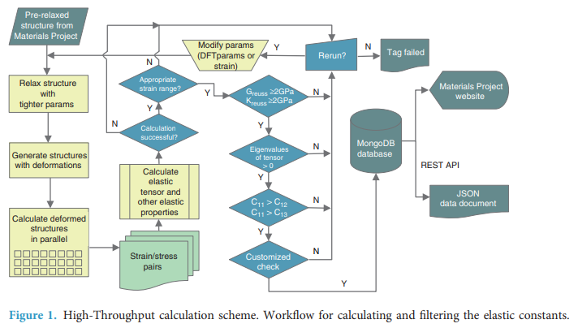
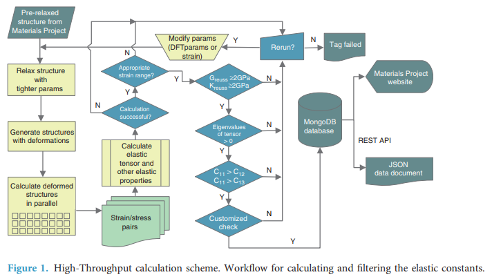
【コメント】
Materials Prijectではこの論文にあるような第一原理計算で弾性定数の算出をしている。
【用語】 弾性定数テンソル：結晶の弾性応答を記述する6×6の行列で、応力とひずみの関係を表す。結晶の対称性によって独立な成分の数が異なる。高スループット計算：多数の計算資源を長時間にわたって利用して、大規模な計算タスクを遂行する手法。材料の特性を系統的にスクリーニングするのに適している。密度汎関数理論：量子力学に基づいて原子系の電子構造や物性を計算する手法。交換相関汎関数の選択によって精度や効率が異なる。応力-ひずみ法：結晶に一定のひずみを与えて、それに対応する応力を計算することで、弾性定数テンソルを求める手法。線形弾性領域内であれば、応力とひずみの関係は直線的である。
【提案手法】 Materials Projectのデータベースから、金属や金属化合物、酸化物や半導体などの無機結晶化合物の構造を選択する。VASPというソフトウェアを用いて、密度汎関数理論の計算を行う。計算にはPAW法とPBE汎関数を採用する。各化合物に対して、6種類の独立なひずみをそれぞれ4段階の大きさでかけて、24種類の変形構造を作る。変形構造において、原子位置を緩和させて、応力テンソルを計算する。応力とひずみの関係を線形にフィッティングして、弾性定数テンソルを求める。弾性定数テンソルから、バルク率やせん断率などの弾性特性を計算する。計算結果を検証やフィルタリングを行って、データベースに格納する。
【学術的新規性】 これまでで最大の無機結晶化合物の弾性定数テンソルのデータベースを作成したことで、多様な材料の弾性特性を一括して比較・分析することができるようになった。高スループット計算により、実験では測定が困難な化合物や、安定性や希少性に問題のある化合物の弾性特性を予測することができた。密度汎関数理論と応力-ひずみ法を組み合わせることで、高精度かつ効率的に弾性定数テンソルを計算することができた。Materials Projectと連携して、データベースを公開し、材料の発見や設計に役立てることができるようにした。
【用語】 弾性定数テンソル：結晶の弾性応答を記述する6×6の行列で、応力とひずみの関係を表す。結晶の対称性によって独立な成分の数が異なる。高スループット計算：多数の計算資源を長時間にわたって利用して、大規模な計算タスクを遂行する手法。材料の特性を系統的にスクリーニングするのに適している。密度汎関数理論：量子力学に基づいて原子系の電子構造や物性を計算する手法。交換相関汎関数の選択によって精度や効率が異なる。応力-ひずみ法：結晶に一定のひずみを与えて、それに対応する応力を計算することで、弾性定数テンソルを求める手法。線形弾性領域内であれば、応力とひずみの関係は直線的である。
【提案手法】 Materials Projectのデータベースから、金属や金属化合物、酸化物や半導体などの無機結晶化合物の構造を選択する。VASPというソフトウェアを用いて、密度汎関数理論の計算を行う。計算にはPAW法とPBE汎関数を採用する。各化合物に対して、6種類の独立なひずみをそれぞれ4段階の大きさでかけて、24種類の変形構造を作る。変形構造において、原子位置を緩和させて、応力テンソルを計算する。応力とひずみの関係を線形にフィッティングして、弾性定数テンソルを求める。弾性定数テンソルから、バルク率やせん断率などの弾性特性を計算する。計算結果を検証やフィルタリングを行って、データベースに格納する。
【学術的新規性】 これまでで最大の無機結晶化合物の弾性定数テンソルのデータベースを作成したことで、多様な材料の弾性特性を一括して比較・分析することができるようになった。高スループット計算により、実験では測定が困難な化合物や、安定性や希少性に問題のある化合物の弾性特性を予測することができた。密度汎関数理論と応力-ひずみ法を組み合わせることで、高精度かつ効率的に弾性定数テンソルを計算することができた。Materials Projectと連携して、データベースを公開し、材料の発見や設計に役立てることができるようにした。
グリーン関数法を用いたDMI相互作用の第一原理計算
Dzyaloshinskii-Moriya interaction (DMI)**は、磁性材料における非対称的なスピン交換相互作用であり、スピン軌道相互作用に起因する。本研究では、Green’s function (GF)法を用いて、DMIの一般的な公式を導出した。GF法は、電子構造と磁気ダイナミクスを統一的に扱うことができる。第一原理計算を用いて、様々な結晶構造と化学組成を持つ磁性材料のDMIを計算した。計算結果は、実験値や他の理論値とよく一致した。DMIの大きさと方向が、結晶対称性や原子配置に依存することを明らかにした。また、DMIの温度依存性や磁場依存性についても議論した。本研究では、DMIがスカイルミオンや多強誘電体などのトポロジカル磁気相の形成に重要な役割を果たすことを示した。これらの相は、スピントロニクスやマルチフェロニクスの応用に有望である。
2021-03-05
First-principles calculation of the Dzyaloshinskii-Moriya interaction: A Green’s function approach
Farzad Mahfouzi, et al. (California State University, Northridge, California 91330, USA)
PHYSICAL REVIEW B 103, 094410 (2021)
First-principles calculation of the Dzyaloshinskii-Moriya interaction: A Green’s function approach
Farzad Mahfouzi, et al. (California State University, Northridge, California 91330, USA)
PHYSICAL REVIEW B 103, 094410 (2021)
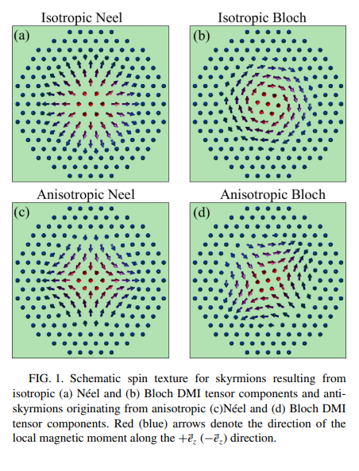
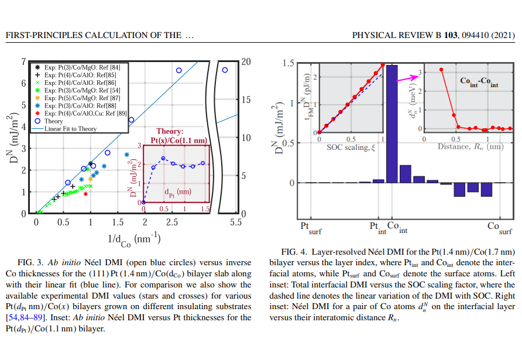
【コメント】
DFTスキルミオン計算の初めての報告かな？ひずみとの関係も興味深い。
【用語】 Dzyaloshinskii-Moriya interaction (DMI)：磁性材料において、スピン軌道相互作用によって生じる非対称的なスピン交換相互作用である。DMIは、スピンの向きをねじる力として働き、スピンのカンチングやスパイラルを引き起こす。DMIは、磁性材料のトポロジカル特性に大きな影響を与える。Green’s function (GF)：線形微分方程式の解を表す関数である。GF法は、電子構造と磁気ダイナミクスを統一的に扱うことができる理論手法である。GF法は、電子相関や不均一系の効果を取り入れることができる。第一原理計算：量子力学や量子化学の基本原理に基づいて、物質の性質を計算する手法である。第一原理計算は、実験データや経験的なパラメータに依存しない。第一原理計算は、新しい材料の開発や物理現象の解明に広く用いられる。
【提案手法】 まず、**密度汎関数理論 (DFT)**を用いて、磁性材料の電子構造と磁化を求めた。DFTは、電子の密度を基本変数として、電子系のエネルギーを最小化する手法である。次に、**ランダウ・リフシッツ・ギルバート方程式 (LLG)**を用いて、磁化の時間発展を記述した。LLG方程式は、磁化のダイナミクスを表す非線形偏微分方程式である。最後に、**Green’s function (GF)**法を用いて、DMIの一般的な公式を導出した。GF法は、電子構造と磁気ダイナミクスを統一的に扱うことができる理論手法である。GF法は、電子相関や不均一系の効果を取り入れることができる。
【学術的新規性】 DMIの一般的な公式を、GF法を用いて初めて導出した。これにより、DMIの物理的な起源や結晶構造や化学組成による変化を定量的に理解することができる。DMIの温度依存性や磁場依存性について、GF法を用いて初めて議論した。これにより、DMIの制御や調整の可能性を示唆することができる。DMIがスカイルミオンや多強誘電体などのトポロジカル磁気相の形成に重要な役割を果たすことを、第一原理計算を用いて初めて示した。これにより、DMIを利用したスピントロニクスやマルチフェロニクスの応用の展望を提供することができる。
【その他】 応力は、DMIの大きさと方向に影響を与える。応力は、結晶の対称性を変化させることで、スピン軌道相互作用の強さや向きを変えるからである。応力は、スカイルミオンや多強誘電体などのトポロジカル磁気相の安定性に影響を与える。応力は、スピンのカンチングやスパイラルの周期や角度を変化させることで、トポロジカル特性を変えるからである。応力は、磁場や温度とともに、DMIの制御や調整の手段となる。応力は、外部から加えることができるし、可逆的であるからである 。
【用語】 Dzyaloshinskii-Moriya interaction (DMI)：磁性材料において、スピン軌道相互作用によって生じる非対称的なスピン交換相互作用である。DMIは、スピンの向きをねじる力として働き、スピンのカンチングやスパイラルを引き起こす。DMIは、磁性材料のトポロジカル特性に大きな影響を与える。Green’s function (GF)：線形微分方程式の解を表す関数である。GF法は、電子構造と磁気ダイナミクスを統一的に扱うことができる理論手法である。GF法は、電子相関や不均一系の効果を取り入れることができる。第一原理計算：量子力学や量子化学の基本原理に基づいて、物質の性質を計算する手法である。第一原理計算は、実験データや経験的なパラメータに依存しない。第一原理計算は、新しい材料の開発や物理現象の解明に広く用いられる。
【提案手法】 まず、**密度汎関数理論 (DFT)**を用いて、磁性材料の電子構造と磁化を求めた。DFTは、電子の密度を基本変数として、電子系のエネルギーを最小化する手法である。次に、**ランダウ・リフシッツ・ギルバート方程式 (LLG)**を用いて、磁化の時間発展を記述した。LLG方程式は、磁化のダイナミクスを表す非線形偏微分方程式である。最後に、**Green’s function (GF)**法を用いて、DMIの一般的な公式を導出した。GF法は、電子構造と磁気ダイナミクスを統一的に扱うことができる理論手法である。GF法は、電子相関や不均一系の効果を取り入れることができる。
【学術的新規性】 DMIの一般的な公式を、GF法を用いて初めて導出した。これにより、DMIの物理的な起源や結晶構造や化学組成による変化を定量的に理解することができる。DMIの温度依存性や磁場依存性について、GF法を用いて初めて議論した。これにより、DMIの制御や調整の可能性を示唆することができる。DMIがスカイルミオンや多強誘電体などのトポロジカル磁気相の形成に重要な役割を果たすことを、第一原理計算を用いて初めて示した。これにより、DMIを利用したスピントロニクスやマルチフェロニクスの応用の展望を提供することができる。
【その他】 応力は、DMIの大きさと方向に影響を与える。応力は、結晶の対称性を変化させることで、スピン軌道相互作用の強さや向きを変えるからである。応力は、スカイルミオンや多強誘電体などのトポロジカル磁気相の安定性に影響を与える。応力は、スピンのカンチングやスパイラルの周期や角度を変化させることで、トポロジカル特性を変えるからである。応力は、磁場や温度とともに、DMIの制御や調整の手段となる。応力は、外部から加えることができるし、可逆的であるからである 。
ホイスラー化合物Co2XAlの磁気弾性および磁歪特性
コバルト系ホイスラー化合物Co2XAl（X=Ti, V, Cr, Mn, Fe）の磁気弾性および磁歪特性を第一原理計算で詳細に調べた。磁気結晶異方性エネルギーを計算するために、従来の全エネルギー法に加えて、トルク法とスピン軌道トルク法という新しい方法を提案した。トルク法とスピン軌道トルク法は、計算効率が高く、磁気結晶異方性定数の原子および軌道分解が可能であることを示した。磁気結晶異方性定数の主な寄与は、コバルト原子の軌道角運動量の歪み誘起変調に由来することを明らかにした。磁歪定数は、実験値と比較して、DFT+U法がより良い一致を示すことを見出した。
2020-09-01
Magnetoelastic and magnetostrictive properties of Co2XAl Heusler compounds
Farzad Mahfouzi, et al. (California State University, Northridge, California 91330, USA)
PHYSICAL REVIEW B 102, 094401 (2020)
Magnetoelastic and magnetostrictive properties of Co2XAl Heusler compounds
Farzad Mahfouzi, et al. (California State University, Northridge, California 91330, USA)
PHYSICAL REVIEW B 102, 094401 (2020)
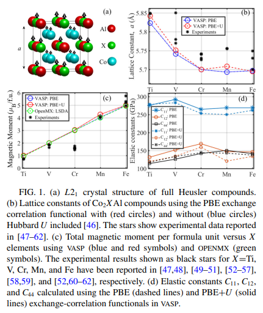
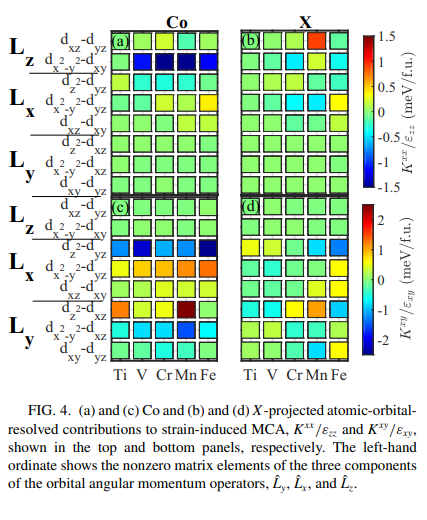
【コメント】
DFT磁歪計算の初めての報告かな？いい論文。
【用語】 磁気結晶異方性：磁性材料の磁気特性が結晶構造の方向によって異なる現象。スピン軌道相互作用に起因し、磁化方向を変えるために必要なエネルギーを表す。磁気結晶異方性は、磁気記憶素子や磁気センサーなどの応用に重要な役割を果たす。磁気弾性：磁化と歪みとの相互作用のこと。磁性材料の形状が磁化方向や磁場の変化によって変化する現象を磁歪と呼ぶ。逆に、歪みが磁化方向や磁場に影響を与える現象を歪み誘起磁気異方性と呼ぶ。磁気弾性は、多発性や磁気機械アクチュエータなどの応用に利用される。ホイスラー化合物：X2YZという組成を持つ三元金属間化合物の一種で、L21という立方晶構造をとるもの。XとYは遷移金属元素で、Zはpブロック元素である。ホイスラー化合物は、半金属性、高キュリー温度、巨大トンネル磁気抵抗、磁気形状記憶、超伝導性、トポロジカルウェイル粒子、異常ネルンスト効果など、多様な物性を示す。
【提案手法】 ホイスラー化合物：X2YZという組成を持つ三元金属間化合物の一種で、L21という立方晶構造をとるもの。XとYは遷移金属元素で、Zはpブロック元素である。ホイスラー化合物は、半金属性、高キュリー温度、巨大トンネル磁気抵抗、磁気形状記憶、超伝導性、トポロジカルウェイル粒子、異常ネルンスト効果など、多様な物性を示す。
【学術的新規性】 Co2XAl化合物の磁気弾性定数は、B1が負でB2が正負に分かれることがわかった。B1は歪みによる軌道角運動量の変化によって決まり、B2は歪みによる磁気結晶異方性の変化によって決まることがわかった。磁歪定数は、DFT+U法が実験値とより良く一致することがわかった。これは、U項が電子相関を考慮することで、磁気特性に影響を与えることを示している。トルク法とスピン軌道トルク法は、磁気結晶異方性定数の原子や軌道に分解できることがわかった。これにより、磁気結晶異方性の物理的な起源を明らかにすることができる。特に、コバルト原子の軌道角運動量の歪み誘起変調が、磁気結晶異方性定数の主な寄与となることがわかった。
【用語】 磁気結晶異方性：磁性材料の磁気特性が結晶構造の方向によって異なる現象。スピン軌道相互作用に起因し、磁化方向を変えるために必要なエネルギーを表す。磁気結晶異方性は、磁気記憶素子や磁気センサーなどの応用に重要な役割を果たす。磁気弾性：磁化と歪みとの相互作用のこと。磁性材料の形状が磁化方向や磁場の変化によって変化する現象を磁歪と呼ぶ。逆に、歪みが磁化方向や磁場に影響を与える現象を歪み誘起磁気異方性と呼ぶ。磁気弾性は、多発性や磁気機械アクチュエータなどの応用に利用される。ホイスラー化合物：X2YZという組成を持つ三元金属間化合物の一種で、L21という立方晶構造をとるもの。XとYは遷移金属元素で、Zはpブロック元素である。ホイスラー化合物は、半金属性、高キュリー温度、巨大トンネル磁気抵抗、磁気形状記憶、超伝導性、トポロジカルウェイル粒子、異常ネルンスト効果など、多様な物性を示す。
【提案手法】 ホイスラー化合物：X2YZという組成を持つ三元金属間化合物の一種で、L21という立方晶構造をとるもの。XとYは遷移金属元素で、Zはpブロック元素である。ホイスラー化合物は、半金属性、高キュリー温度、巨大トンネル磁気抵抗、磁気形状記憶、超伝導性、トポロジカルウェイル粒子、異常ネルンスト効果など、多様な物性を示す。
【学術的新規性】 Co2XAl化合物の磁気弾性定数は、B1が負でB2が正負に分かれることがわかった。B1は歪みによる軌道角運動量の変化によって決まり、B2は歪みによる磁気結晶異方性の変化によって決まることがわかった。磁歪定数は、DFT+U法が実験値とより良く一致することがわかった。これは、U項が電子相関を考慮することで、磁気特性に影響を与えることを示している。トルク法とスピン軌道トルク法は、磁気結晶異方性定数の原子や軌道に分解できることがわかった。これにより、磁気結晶異方性の物理的な起源を明らかにすることができる。特に、コバルト原子の軌道角運動量の歪み誘起変調が、磁気結晶異方性定数の主な寄与となることがわかった。
交換磁歪の自動計算
本研究では、単位胞の変形によって等方的な磁弾性定数、等方的な磁歪係数、および交換磁歪に関連する自発的な体積磁歪を計算する方法を提案している。この方法は、pythonパッケージMAELAS（v3.0）に実装されており、第一原理計算や古典的なスピン格子モデルを用いて、これらの量を自動的に求めることができる。また、自発的な体積磁歪を得るために必要な基準状態についても議論しており、パラ磁性状態の平衡体積と基底状態の磁気秩序を組み合わせたものであることを示している。さらに、一軸性結晶における等方的な磁歪係数λ α1,0 の理論式に誤りがあることを指摘し、修正している。この計算ツールは、交換相互作用と磁弾性との関係をより良く理解し、特性評価するのに役立つと期待される。特に、交換相互作用と磁弾性との関係をより良く理解し、特性評価するのに役立つ計算ツールを開発した。等方的な磁弾性定数や自発的な体積磁歪は、インバー合金などの温度膨張係数やレーザー誘起超高速磁化などの新奇な現象に重要な役割を果たす物理量である。第一原理計算や古典的なスピン格子モデルと連携して、高い精度と安定性でこれらの量を自動的に求めることができる。
2023-04-12
Automated calculations of exchange magnetostriction
P. Nieves, et al. (Technical University of Ostrava, Czech Republic)
Computational Materials Science 224(1):112158 (2023)
Automated calculations of exchange magnetostriction
P. Nieves, et al. (Technical University of Ostrava, Czech Republic)
Computational Materials Science 224(1):112158 (2023)
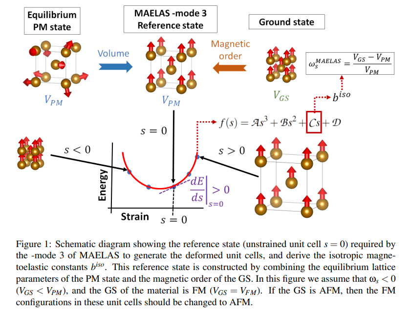
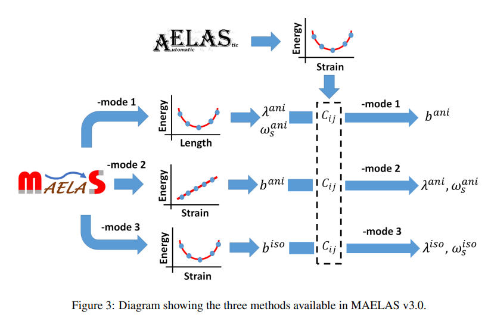
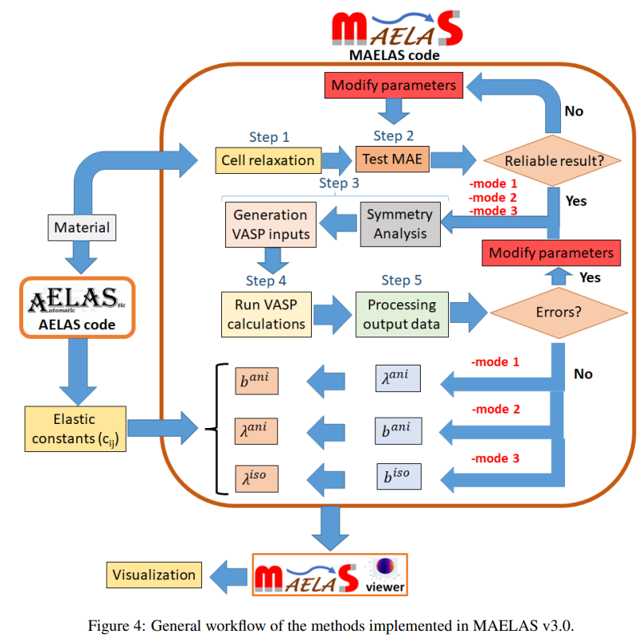
【コメント】
電子的な相転移や構造的な相転移を評価するのに歪み印加は有効のようだ。
【用語】 等方的な磁弾性定数（b iso）：ひずみに依存するが、飽和状態での磁化方向には依存しない磁弾性エネルギーの寄与を与える定数である。主に原子磁気モーメントと交換相互作用の体積依存性に起因する。等方的な磁歪係数（λ iso）：ひずみと等方的な磁弾性定数から導かれる量である。これらの量は、長さの自発的な変化率（[l −l0]/l0）を特徴付ける。ここで、l0とlはそれぞれパラ磁性状態と飽和状態での材料の長さである。自発的な体積磁歪（ωs）：パラ磁性状態と飽和状態での体積変化率（ωs = [VFM −VPM]/VPM）で定義される物理量である。この物理量は、例えばインバー合金（Fe65Ni35）のように、通常の熱膨張を打ち消す非常に大きなωs (∼ 10−2 )を持つ材料において、温度膨張係数に異常を引き起こす。MAELAS：第一原理計算や古典的なスピン格子モデルと連携して、磁弾性定数や磁歪係数を自動的に計算することができるpythonパッケージである。このパッケージは、単位胞の変形に基づくエネルギー-ひずみ法を用いており、高い精度と安定性を持つ。
【提案手法】 まず、基準状態として、パラ磁性状態の平衡体積と基底状態の磁気秩序を組み合わせた単位胞を用意する。この単位胞の原子位置は、一定の体積での平衡位置に緩和させる。次に、MAELASを用いて、基準状態から変形した単位胞を生成する。変形した単位胞は、等方的な磁弾性定数b iso i を求めるために必要なひずみテンソルεi (s)に対応する。ここで、sはひずみをパラメータ化する変数である。次に、第一原理計算や古典的なスピン格子モデルを用いて、変形した単位胞のエネルギーを計算する。このとき、基底状態と同じ磁気秩序（強磁性または反強磁性）を用いる。次に、MAELASを用いて、エネルギーとひずみのデータに対して3次多項式（Eq.3）をフィッティングする。このフィッティングから、等方的な磁弾性定数b iso i は式（4）で与えられる。最後に、弾性定数も計算されていれば、MAELASは等方的な磁歪係数（λ iso）と自発的な体積磁歪（ωs）も計算する。これらの量は、付録Aに示す理論式（λ iso(b iso k ,Ci j)とωs(λ iso)）から求められる。
【学術的新規性】 交換磁歪に関連する等方的な磁弾性定数、磁歪係数、自発的な体積磁歪を単位胞の変形に基づいて計算する方法を提案し、pythonパッケージMAELASに実装した。また、自発的な体積磁歪を得るために必要な基準状態を明確にし、パラ磁性状態の平衡体積と基底状態の磁気秩序を組み合わせたものであることを示した。更に、一軸性結晶における等方的な磁歪係数の理論式に誤りがあることを指摘し、修正した。
【用語】 等方的な磁弾性定数（b iso）：ひずみに依存するが、飽和状態での磁化方向には依存しない磁弾性エネルギーの寄与を与える定数である。主に原子磁気モーメントと交換相互作用の体積依存性に起因する。等方的な磁歪係数（λ iso）：ひずみと等方的な磁弾性定数から導かれる量である。これらの量は、長さの自発的な変化率（[l −l0]/l0）を特徴付ける。ここで、l0とlはそれぞれパラ磁性状態と飽和状態での材料の長さである。自発的な体積磁歪（ωs）：パラ磁性状態と飽和状態での体積変化率（ωs = [VFM −VPM]/VPM）で定義される物理量である。この物理量は、例えばインバー合金（Fe65Ni35）のように、通常の熱膨張を打ち消す非常に大きなωs (∼ 10−2 )を持つ材料において、温度膨張係数に異常を引き起こす。MAELAS：第一原理計算や古典的なスピン格子モデルと連携して、磁弾性定数や磁歪係数を自動的に計算することができるpythonパッケージである。このパッケージは、単位胞の変形に基づくエネルギー-ひずみ法を用いており、高い精度と安定性を持つ。
【提案手法】 まず、基準状態として、パラ磁性状態の平衡体積と基底状態の磁気秩序を組み合わせた単位胞を用意する。この単位胞の原子位置は、一定の体積での平衡位置に緩和させる。次に、MAELASを用いて、基準状態から変形した単位胞を生成する。変形した単位胞は、等方的な磁弾性定数b iso i を求めるために必要なひずみテンソルεi (s)に対応する。ここで、sはひずみをパラメータ化する変数である。次に、第一原理計算や古典的なスピン格子モデルを用いて、変形した単位胞のエネルギーを計算する。このとき、基底状態と同じ磁気秩序（強磁性または反強磁性）を用いる。次に、MAELASを用いて、エネルギーとひずみのデータに対して3次多項式（Eq.3）をフィッティングする。このフィッティングから、等方的な磁弾性定数b iso i は式（4）で与えられる。最後に、弾性定数も計算されていれば、MAELASは等方的な磁歪係数（λ iso）と自発的な体積磁歪（ωs）も計算する。これらの量は、付録Aに示す理論式（λ iso(b iso k ,Ci j)とωs(λ iso)）から求められる。
【学術的新規性】 交換磁歪に関連する等方的な磁弾性定数、磁歪係数、自発的な体積磁歪を単位胞の変形に基づいて計算する方法を提案し、pythonパッケージMAELASに実装した。また、自発的な体積磁歪を得るために必要な基準状態を明確にし、パラ磁性状態の平衡体積と基底状態の磁気秩序を組み合わせたものであることを示した。更に、一軸性結晶における等方的な磁歪係数の理論式に誤りがあることを指摘し、修正した。
二重ペロブスカイトの構造相転移と磁気弾性結合
高圧XRD測定：Nd2CoFeO6 (NCFO)は、高圧下で正方晶から単斜晶への構造相転移を約13.8 GPaで起こすことがXRD測定によって明らかになった。相転移は、(Fe/Co)O6八面体の歪みが圧力によって増加し、格子ひずみを緩和するために起こる。また、約1.1 GPaで体積圧縮率と体積弾性率に異常が見られたが、これは電子的な異常によるものと考えられる。低温ラマン分析：NCFOのラマンスペクトルは、温度が低下すると青方偏移するが、約47 Kで急激に赤方偏移することが低温ラマン分析によって示された。この赤方偏移は、スピン再配向転移に関連していると考えられる。また、約240 Kでラマンモード周波数に突然の飛びが見られたが、これは反強磁性転移温度TNと一致する。高圧ラマン分析：高圧下でのラマンスペクトルは、約27.4 GPaまで大きな変化は見られなかった。しかし、AgとBgモードのピーク位置は、約1 GPaと約13.1 GPaで傾きの変化を示した。13.1 GPa以上では、正方晶から単斜晶への構造相転移に関連して傾きが減少した。1 GPa以下では、圧力に対する傾きが半分以下に減少したが、これは新しいスピン配列によるものと推測される。磁場下での高圧ラマン分析：外部磁場を印加すると、Bgモードは圧力に伴って硬化した。この硬化は、スピンと磁場との強い相互作用によってスピンフォノン相互作用が影響を受けるためだと考えられる。また、磁場を切った後もラマンスペクトルは元の振る舞いに戻らなかった。この現象は詳細な理論的研究が必要である。
Published 2023-08-18
Pressure-induced softening in bulk modulus due to magneto-elastic coupling in Nd2CoFeO6 double Perovskite
Bidisha Mukherjee et al. (Indian Institute of Science Education and Research Kolkata, India)
arXiv:2308.09651 (cond-mat)
Pressure-induced softening in bulk modulus due to magneto-elastic coupling in Nd2CoFeO6 double Perovskite
Bidisha Mukherjee et al. (Indian Institute of Science Education and Research Kolkata, India)
arXiv:2308.09651 (cond-mat)
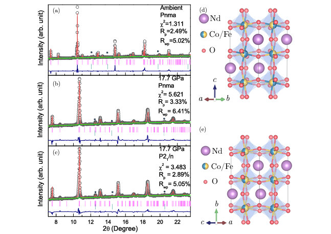
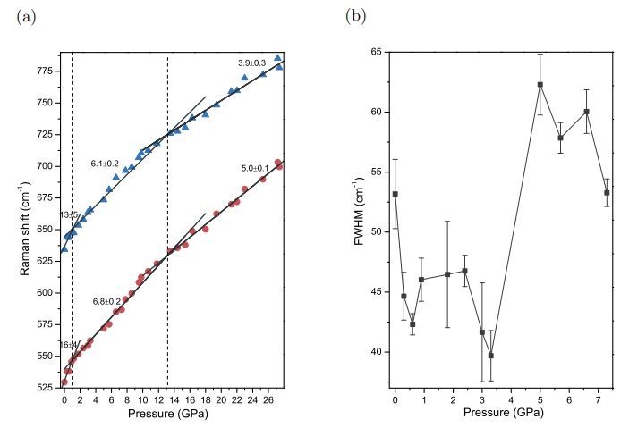
コメント：電子的な相転移や構造的な相転移を評価するのに歪み印加は有効のようだ。